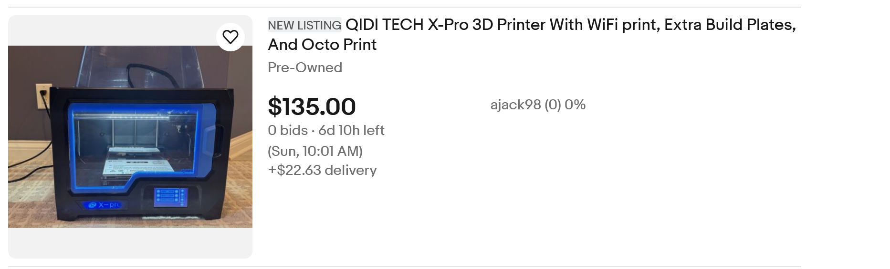
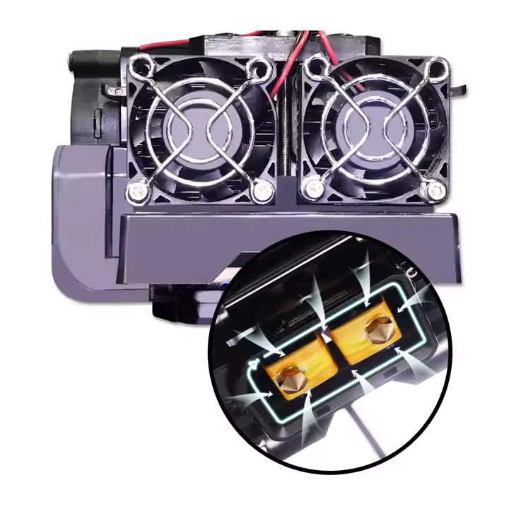

QidiTech X-Pro in 2025?
Honestly... maybe?...but maybe it's just my bias
Tldr;
Buy if...
- You have $150
- You want to print engineering materials on a budget
- You're okay with small print volume in a big box
- You're okay with slower speeds (compared to Bambu and Creality)
Don't buy if...
- You want fast and modern
- You want lots of colors
- You don't have a lot of space
Details
QidiTech is making rounds at the moment for their new XPlus 4 printer, which should be an interesting machine to watch in the coming months. There's apparently a "box" that's being released soon that should rival units like the BambuLab AMS and Prusa's MMU. It should probably be noted that most references to this product appear to have been purged from the website, though a few do still remain on the XPlus 4 page.
Anyways, I'd like to use this chance to harken back to one of Qidi's older printers, the X-Pro. The X-Pro can be easily had on E-Bay for around $150, and for less than $100 if you're willing to really search. It's an old printer - it came out more than half a decade ago - but honestly? At that price point, the X-Pro is a bargain.
Pros

I own an X-Pro myself, and it's a beast of a machine. It really was ahead of its time: a Core-XY, dual color machine with Wi-Fi connectivity and the ability to, if you really push it, print materials like CF-Nylon. That's quite the spec sheet, even for today, and an extraordinary one for when the X-Pro came out. You'll also find it really hard to find a machine for less than $800 (much less at $150) that can print high-temp engineering materials, even if it does print them slowly.
Plus, Qidi support is legendary; people have reported some of the best experiences I've ever heard of from any company, much less a Chinese 3D-printer company. Chances are, if you have to fix something, they'll send it to you. And because they're still around and doing decently well, you'll find that their slicer is outdated but quite workable. If you're not a beginner, Qidi machines are supported on almost every major slicer (though you might have to root out a community profile).
That Dual Extruder!

That dual extruder, however, is probably the biggest reason to pick up an X-Pro right now. As nice as all the AMS and MMUs and ACE units are, dual extruders are still the best option for printing practical dual material prints. I'm talking about dissolvable supports, abrasive filaments, nylon, carbon fiber. The X-Pro might not be able to print a full-color Deadpool mask, but it's an absolute unit of a machine when it comes to the more print-to-use materials.
Caveats
The main caveats to the X-Pro are size and speed. The X-Pro is massive, but its printable volume is tiny, measuring 230mm x 150mm x 150mm. It's also not that fast - even for its time, it was an average speed; in the Bambu era, it works at a snail's pace. On the other hand... enclosed, two-material Core-XY machine capable of printing engineering materials, plus it's enclosed and has a touch screen (little unresponsive, but better than whatever old iPod thing Bambu has on their P1).